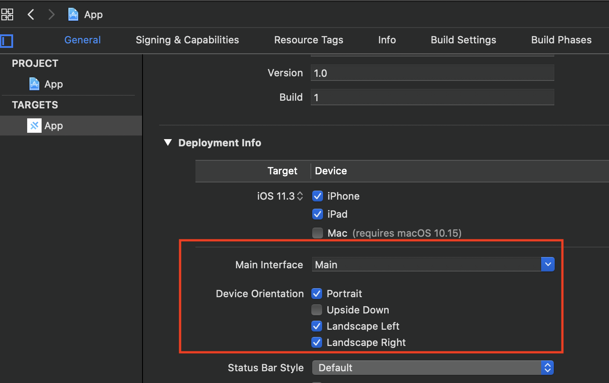

Get Started with Antourage Viewer React Native SDK
Pre-requisites
For a successful integration please find our requirements below and make sure that you are compatible.
- react-native 0.62.2 or later
- iOS:
- Xcode 12.5 or later
- CocoaPods 1.10.0 or later
- Project must target iOS 11.3 or later
- Landscape orientation support
- Android:
- Minimum Android SDK: Antourage widget requires a minimum API level of 21;
- Starting from 0.2.0 version library has migrated to the androidX, so make sure that you have
in your gradle.properties
android.useAndroidX=true android.enableJetifier=true
Install
Antourage SDK is installed with npm (Node Package Manager). To install the SDK go through steps below:
Step 1
npm i antourage-react-native --save
Open ios directory from terminal and install pods:
cd ios
pod install
Add an Antourage config file
Please be sure that you already have the config file, otherwise please contact Antourage to request one for your application. The file contains a data for authorization (app client ids, redirect urls, etc.)
Move your Antourage-Info.plist config file into your Xcode project. If prompted, select to add the config file to all targets.
Move your antourage_info.json config file into your project's assets folder. If there's no assets folder in your project - simply create it at app/src/main/.
Initialization
You should to try call this method once per app lifecycle.
import { Antourage } from 'antourage-react-native';
// ...
Antourage.configure();
Add UI part
The main feature of Antourage SDK is the widget — a simple button that should be placed on your screen. The widget will fully work only after successful configuration.
If you need to know when the Feed screen appears and disappears you can use callbacks.
import AntourageView from 'antourage-react-native';
// ...
render() {
return (
<View style={styles.container}>
<Text style={styles.welcome}>Welcome to React Native!</Text>
<Text style={styles.instructions}>To get started, edit App.js</Text>
<Text style={styles.instructions}>{instructions}</Text>
<AntourageView
onViewerAppear={() => console.log('Appeared')}
onViewerDisappear={() => console.log('Disappeared')}
widgetPosition={'bottomRight'}
widgetLocale={'en'}
widgetMargins={{ vertical: 50, horizontal: 20 }}
/>
</View>
);
}
| Property | Type | Description |
|---|---|---|
| onViewerAppear | Closure | Called when the user opens the widget controller. |
| onViewerDisappear | Closure | Called when the user dismisses the widget controller. |
Orientation (iOS only)
Your app may support only portrait orientation, but our widget should be able to use landscape orientation while playing video.
First of all you should enable ladnscape orientation in xcode project. 
You can use some third-party library (react-native-orientation-locker) to be able to lock orientations occasionally depending on the content. Just add two listeners to handle widget state:
import AntourageView from 'antourage-react-native';
import Orientation from 'react-native-orientation-locker';
// ...
<AntourageView
onViewerAppear={() => Orientation.unlockAllOrientations() }
onViewerDisappear={() => Orientation.lockToPortrait() }
/>
Localization
By default the Android widget will use the device language. On iOS we use the application language. English and Swedish languages are availabe. If you want to force app to use language that differs from current one — you can set localization by setting widgetLocale property in antourage view component:
import AntourageView from 'antourage-react-native';
// ...
<AntourageView widgetLocale={'en'} /> // or "sv"
Required Parameters
TBD: e.g. team_id
Describe what parameters are there and where to get them
Example
To run the example project, clone the Antourage repo first.
Run yarn bootstrap in the root directory to install the required dependencies for each package.
While developing, you can run the example app for testing needs.
To start the packager:
yarn example start
yarn example android
yarn example ios